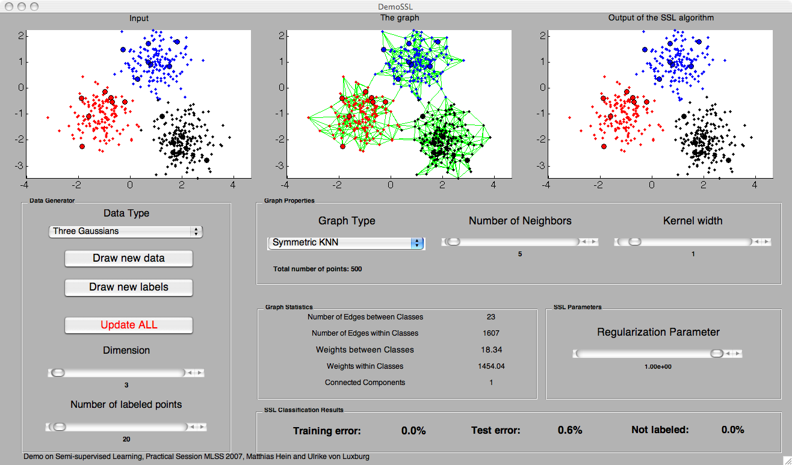

[ Go to GraphDemo main page]
Purpose
DemoSSL: The purpose of this demo is to show how graph-based semi-supervised learning depends on the graph structure, the amount of labeled data and the regularization
parameter. As algorithm we use the one proposed by Zhou et al: "Learning with local and global consistency".
Tutorial
DemoSSL has been used for teaching purposes at the Machine Learning Summer School 2007 in Tuebingen, Germany. The tutorial presents the theoretical basis of the algorithm
of Zhou as well as of related ones. The influences of the different parameters on the classification results of the semisupervised learning algorithm are discussed, too.
Download tutorial on semi-supervised learning
Screenshot of DemoSimilarityGraphs

Panels in DemoSSL
- Plots: From left to right, the labeled and unlabeled points, the associated neighborhood graph and the result of the semi-supervise learning
algorithm.
- Data Generator (Left): One can choose to draw data from a new dataset as well as a new sample from the same dataset. The latter is useful if
one wants to study the influence of the statistical fluctuations on the semi-supervised learning algorithm.
- Graph Properties (Middle): The neighborhood graph and its parameter (the number of neighbors k or the neighborhood radius eps) can be choosen
as well as the parameter sigma (kernel width) of the Gaussian weights.
- Graph Statistics (Middle/Bottom): The number of edges as well as the weights of the edges within/between the different classes are shown.
Additionally, the number of the connected components of the graph is presented.
- SSL Parameters (Middle/Right): The control for the regularization parameter of the graph.
- SSL Classification results (Middle/Right): The percentage of training and test (on the unlabeled data) error are shown. Additionally, also
the percentage of unlabeled points is reported. Points which are unlabeled are also counted as errors. However, unlabeled points should be rather seen as a third class which indicates that the
algorithm has not enough information to infer their labels.